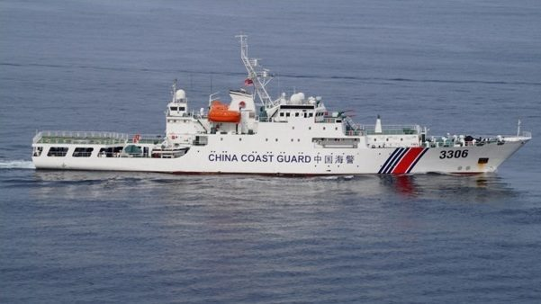

중국 해경, 대만 동부 해역 순항 종료… '선박 198척 점검' 발표, 대만은 반발
중국 해경이 대만 동부 해역에서의 순항·법집행 활동을 종료하고 기간 중 선박 198척을 점검했다고 발표했다. 대만 측은 관할권을 침해하는 일방적 행위라며 반발했다. 양측 입장을 함께 전한다.
형덕창 기자 · 2026.06.11
橋중국

聯合報에 따르면 중국 해경은 대만 동부 해역에서 진행한 순항 활동을 마무리하며 누적 198척의 선박을 점검(點驗)했다고 밝혔다. 중국 측은 이를 정당한 법집행이라고 주장했다.
광고 문의 · 300×250대만 당국은 중국의 일방적 법집행 활동이 대만의 관할권과 항행 안전을 침해한다며 항의하고, 해순서 함정을 통해 대응 모니터링을 진행했다.
대만 동부 해역은 그간 양안 긴장의 중심이던 대만해협 서측과 달리 상대적으로 조용하던 수역이어서, 활동 범위의 확장 여부가 관심사로 떠올랐다. 중국 관영매체는 이번 활동을 어업 관리와 해상 질서 차원으로 설명했다.
양안의 해상 활동은 어업·해운 등 민생과 직결되는 사안이기도 하다. 華橋時報는 어느 한쪽의 프레임을 취하지 않고 양측의 공식 발표를 그대로 병기한다.
출처·참고 (사실 확인용 — 본문은 직접 재작성)
· 聯合報
· 중국 해경국 발표
· 聯合報
· 중국 해경국 발표